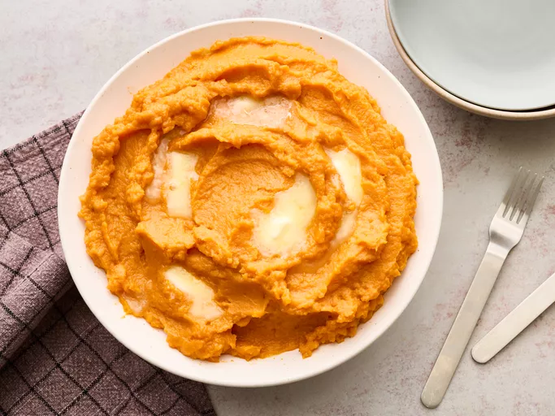

Mashed Sweet Potatoes

Description
These mashed sweet potatoes made with boiled sweet potatoes, warm milk,
butter, and maple syrup are a deliciously simple holiday or fall side dish
the whole family will love. This recipe is easy to make in 40 minutes.
Ingredients
- Sweet potatoes
- Milk
- Butter
- Maple Syrup
Steps
- Gather all ingredients.
-
Bring a large pot of salted water to a boil. Add sweet potatoes, reduce
the heat to medium-low, and simmer until tender, 20 to 30 minutes. Drain
and transfer to a bowl.
- Mash potatoes with a potato masher until mostly smooth.
-
Gradually stir in warm milk, a little at a time, until potatoes reach
desired consistency.
- Stir in butter and maple syrup until smooth and butter is melted.
- Serve warm. Enjoy!
Home